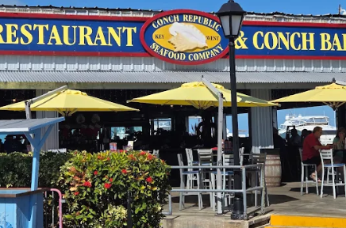
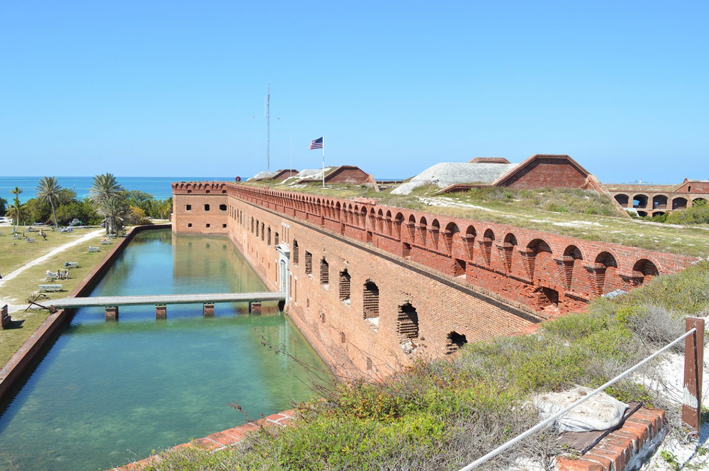
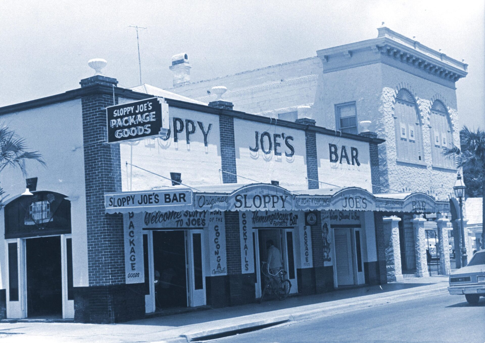

Paradise awaits
Visit Key West
Key West, the southernmost point in the United States, is famous for watersports, lively nightlife, beaches, historic sites and its pastel, conch-style architecture.Key West is full of surprising stories, colorful characters and unique moments in American history. From shipwreck salvaging and pirates to famous writers and creative local traditions, the island is packed with interesting details that make every visit memorable. Learn all about some of the most fascinating Key West facts that help explain why this island is unlike any other place in the country.
Have some fun
Attractions + Restaurants

Conch Republic Seafood Company
Conch & Caribbean-style eats star at this laid-back eatery overlooking the seaport & marina.
Address
631 Greene St, Key West, FL 33040
What to order
Get the Stone Crabs!

Dry Tortugas National Park
Known as the home of magnificent Fort Jefferson, picturesque blue waters, superlative coral reefs and marine life.
Address
Florida
What to do
Bring your snorkel gear.

Historic Sloppy Joe's Bar and Grill
Open since 1933, this bar offers live music & dancing plus a separate tap room for sports-watching.
Address
201 Duval St, Key West, FL 33040
What to order
Ice cold drinks